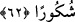

Gönül, felek miracına muhtaçtır
Gönül fenâ burcundan geçince
Sonunda bekâ tecellîlerini bulur
Bu tecellî arş tarafından değildir
Bu teselli yeryüzünden değildir
Bu tecellî, burçları yaratan Zât-ı ilâhîdendir
Bu his gözü, o tecellî kandilini görmedi
62. İbret almak veya şükretmek dileyen kimseler için gece ile gündüzü birbiri
ardınca getiren de O’dur.
“İbret almak” Allah’ın nimetlerini düşünmek ve yarattıkları üzerinde tefekkür etmek
isteyen kimseler için… Böyle yapan kimseler hikmet sâhibi, varlığı bizzat
vâcib/zorunlu, kullarına pek merhametli bir yaratıcının mutlaka var olması gerektiğini
bilirler. Bu durumda ibret almak isteyen kimse ile henüz kâfir olanlar kasdedilmiş olur.
Sonra da mü’minlerin durumuna şöyle işâret edilmiştir:
“veya” gece ve gündüzde bulunan nimetlere karşılık Allah’a tâatte bulunarak O’na
“şükretmek dileyen kimseler için” eksiksik hikmetiyle “gece ile gündüzü birbiri
ardınca getiren de O’dur.” Yâni kendisinde yapılması gereken amel konusunda geceyi
ve gündüzü biri diğerinin ardından gelir ve yerine geçer şekilde birbiri ardınca getirdi.
Gece ve gündüz amellerinden birisini kaçıran kimse diğerinde onu kaza eder. Böylece
nâfile ibâdet ve tâatlarda kullara bir genişlik tanınmış olur. Ömer b. Hattâb (r.a.) bir
defasında gece Kur’an okumayı kaçırdığında Hz. Peygamber (a.s.)’ın ona söylediği şu
söz de bunu desteklemektedir: “Ey Hattaboğlu, Allah senin hakkında şu âyeti indirdi:
“İbret almak veya şükretmek dileyen kimseler için gece ile gündüzü birbiri ardınca
getiren de O’dur.” Artık geceleyin kaçırdığın nafileleri gündüz, gündüz kaçırdığın
nafileleri de geceleyin kaza et.”[246]
Ya da mânâ şöyledir: Allah gece ve gündüzü birbiri ardınca/peşpeşe gelir kıldı. Gece
gelir, gündüz gider. Gündüz gelir, gece gider. İnsanlar yılların sayısını ve hesâbı
bilsinler; geçimlerini temin etmek üzere gezip dolaşmak için belli bir vakit, oturup
istirahat etmek için de belli bir vakit olsun diye gündüzsüz gece, gecesiz de gündüz
yaratmadı.
Âyette Allah’ın nimetini hatırlatma, hikmet ve kudretinin kemâline dikkat çekme
vardır.
Âyetteki “ ” lafzının “ve” anlamına olması da mümkündür. Buna göre mânâ şöyle
olur: “Biz gece ve gündüzü, zikreden ve şükredenler için iki vakit olması için birbiri